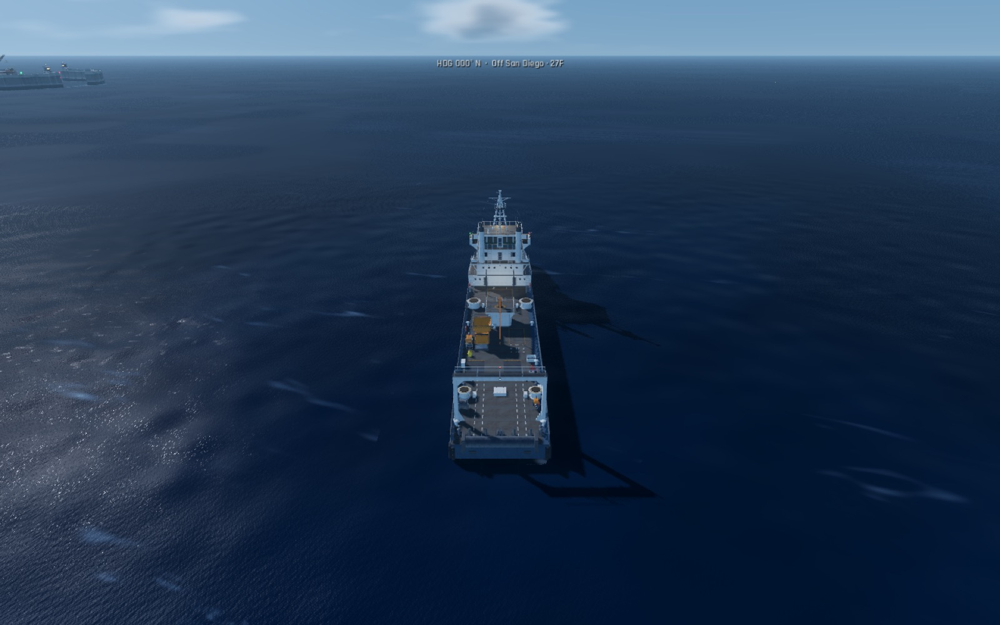
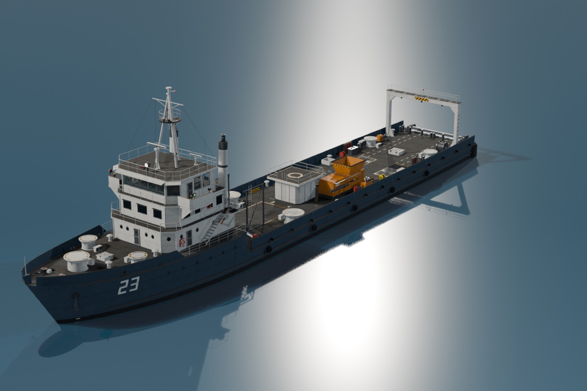
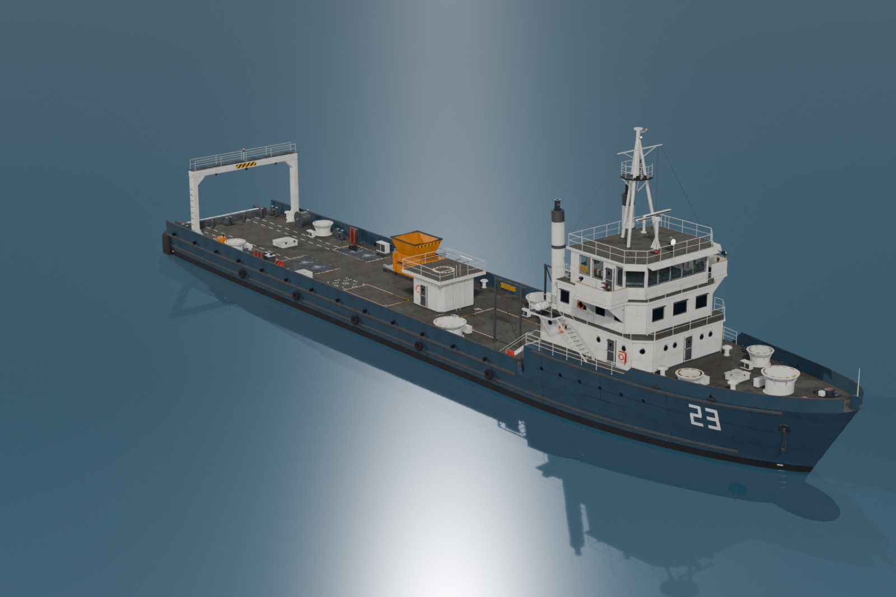

Runners · Player ships
Atlas
Runners is in development. Details will change.
Final Claude Opus v2 Approved 2026-11-15
Top Scavenger. Tows the largest wrecks and carries six containers of salvage beside a big scrap store.







Her sheet
- Class
- Scavenger
- Level
- 3
- Size
- 82 m long, 14 m beam
- Containers on deck
- 6 × 20 ft
- Pallet places
- 4
- Weapon mounts
- 7: 4 small, 3 medium
- Scrap
- 64 units, open bin on deck, lifted by her magnet crane
- Compactor
- built in beside the scrap bin: presses scrap into pallets to sell (Kyle, 13 Nov 2026)
- Deck crane
- grade 3
- Tow winch
- yes, on the stern. Tows wrecks up to about 197 m
- Speed / hull
- 30 m/s, 1000 HP
- Price
- 14,000 CR
How she works
- Cargo: 6 × 20 ft containers on marked deck spots and 4 pallets on deck. A crane at the berth lifts cargo on and off from above; nothing rolls on.
- Scrap: her deck crane swings its magnet out over the side, lifts scrap from the water and drops it in the open bin on deck. Holds 64 units.
- Compactor (Kyle, 13 Nov 2026): a scrap compactor is built into her beside the bin. It presses scrap from the bin into pallets of bales that can be sold and sets each one out on deck, so her pallet places, hold and containers can all carry scrap. How much scrap makes a pallet is not decided.
- Loot: sunk pirates leave pallets floating, each with a random load. Her magnet crane lifts a pallet aboard onto one of her 4 pallet places, so a full deck takes no more.
- Towing: a line from the stern winch is made fast to a wreck and she drags it home. Wrecks up to about 197 m.
- Fighting: 7 weapon mounts (4 small, 3 medium). The player buys and fits the guns; each one trains and fires on its own pad.
- Handling: 30 m/s top speed, 1000 hull points.
Ideas for her
Proposals, not decided yet.
- Proposal: Twin tow winches, to tow two wrecks or one big one, and a wide open stern.
- Proposal: the scrap bin is a real open-topped hopper, so the pile of scrap can be seen rising as she fills.
Her story
Her story has not been written yet.
From the World Atlas
Top Scavenger. Tows the largest wrecks and carries six containers of salvage beside a big scrap store.
Scrap: 64 units, open bin on deck, lifted by her magnet crane; Compactor: built in beside the scrap bin: presses scrap into pallets to sell (Kyle, 13 Nov 2026); Deck crane: grade 3; Tow winch: yes, on the stern. Tows wrecks up to about 197 m
World Atlas, Runners 2055: the ships